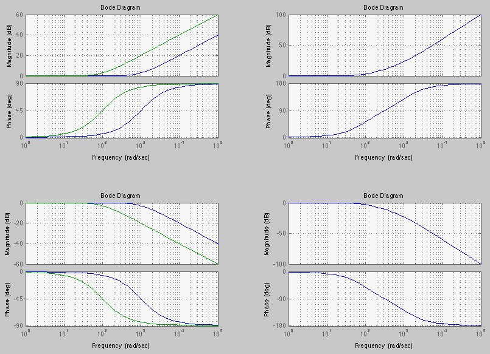

- Constant gain
- Delay factor:

- Derivative factor
:
In particular:
- When ,
- If a frequency
 becomes ten times higher, then
The Lm plot of is a straight line with a slop of 20 dB/dec that goes
through a zero-crossing at .
becomes ten times higher, then
The Lm plot of is a straight line with a slop of 20 dB/dec that goes
through a zero-crossing at .
Also consider two additional cases related to . First,
The slop of the Lm plot is
. For example, when  , we have:
, we have:
 |
(494) |
Second, the plots of
are similar to those of , except the
zero-crossing occurs at
, i.e.,
.
- Integral factor
:
The Lm plot of is a straight line with a slop of -20 dB/dec that goes
through a zero-crossing at .
- First order factor in numerator
 |
(496) |
Consider the following three cases:
-
, i.e.,
 is the corner frequency, we have
is the corner frequency, we have
-
(e.g.,
 ):
):
-
 (e.g.,
(e.g.,
 ):
):
 |
(501) |
The straight-line asymptote of
 has zero slope when
but a slope 20 dB/dec when
. The straight-line asymptote of
is zero when
, when
,
but with a slope
in between.
has zero slope when
but a slope 20 dB/dec when
. The straight-line asymptote of
is zero when
, when
,
but with a slope
in between.
- First order factor in denominator
 |
(502) |
Both the Lm and phase plots of
is simply the negative
version of
.
The figure below shows the plots of two first order systems corner frequencies
and
, together with the plots of their product, a
second order system.

- Second-order factor
The denominator is a 2nd order polynomial for variable . Consider the
following two cases:
First, if
 i.e., if
, the denominator has two real and negative roots:
i.e., if
, the denominator has two real and negative roots:
and
can be written as a product of two first order FRFs:
where
and
are the two time constant of the two
first order systems. Now the second order factor is the product of two first order
factors and
with corner frequencies at
and
.
Second, if  , i.e., the two roots are complex. We consider the numerator
and the denominator separately. The numerator is just a constant with zero phase and
log-magnitude of
, i.e., the two roots are complex. We consider the numerator
and the denominator separately. The numerator is just a constant with zero phase and
log-magnitude of
 . Next consider the
rest of the function:
. Next consider the
rest of the function:
We have
| |
|
![$\displaystyle Lm\;H(j\omega)=20\log_{10} \vert H(j\omega)\vert
=-10\;\log_{10}[\; (1-(\frac{\omega}{\omega_n})^2)^2+(2\zeta\frac{\omega}{\omega_n})^2\;]$](img1392.svg) |
(509) |
Consider three cases:
-
:
Now
and
-
, i.e.,
 :
:
-
, i.e.,
:
This is a straight line with slop of -40 dB per decade.
 . When i.e.,
, we have
. When i.e.,
, we have
 , but at the resonant frequency
, which can be found by taking derivative of the magnitude of the denominator
with respect to
, but at the resonant frequency
, which can be found by taking derivative of the magnitude of the denominator
with respect to  and setting it to zero:
and setting it to zero:
![$\displaystyle \frac{d}{du}[u^2+(4\zeta^2-2)u+1]=2u+4\zeta^2-2=0$](img1408.svg)
 i.e.,
i.e.,
 , i.e.,
, the result is complex indicating there
is no peak.
, i.e.,
, the result is complex indicating there
is no peak.